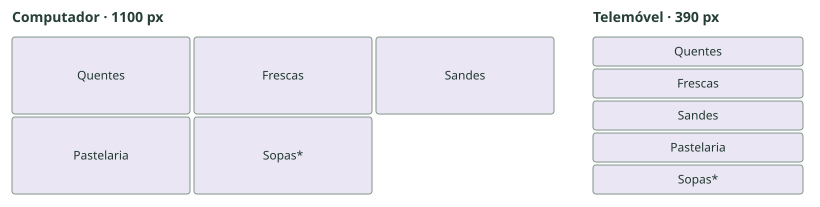

Medidas desta ficha
- Medidas a usar
- 16 px entre categorias; 10 px entre produtos de uma categoria; 8 px entre nome e preço. O preço só ocupa a largura necessária.
- Quando muda a disposição
- Base: 1 coluna. A partir de 640 px: 2 colunas. A partir de 1000 px: 3 colunas. Os limites estão incluídos.
- Resultado esperado
- 390 px: 1 categoria por fila. 768 px: 2. 1100 px: 3. O nome e o preço continuam lado a lado.
Larguras para testar: 390 px, 768 px e 1100 px. São larguras da janela do navegador. Só escreves uma media query se o exercício a pedir.
No CSS: escreve 16px, sem espaço entre o número e a
unidade.
Primeiro passo: Abre style.css no editor e lê a etapa 1.
Quando fizeres uma alteração, guarda o ficheiro e atualiza esta página para veres o que
mudou.
Ver o resultado esperado no computador e no telemóvel
Este esquema mostra as posições, sem escala. Para a largura intermédia, usa os testes no fim. O asterisco assinala o elemento que a ficha pede para acrescentar.

Área de trabalho · Ementa por categorias
Ementa do Café da turma
Bebidas quentes
- Expresso
- 1,20 €
- Chá de tília
- 1,80 €
Bebidas frescas
- Limonada
- 2,30 €
- Sumo de laranja
- 2,60 €
Sandes
- Queijo e tomate
- 3,40 €
- Pasta de grão
- 3,70 €
Pastelaria
- Queque de limão
- 1,90 €
- Bolo de cenoura
- 2,10 €
Etapas e conceitos desta ficha
Já conheces: Grid no elemento pai; colunas com fr; intervalos com gap; mudanças de largura com @media.
Com apoio nesta ficha: Uma grelha pode conter outra. Cada div do produto é pai de dois elementos: dt (nome) e dd (preço).
- Empilha as quatro categorias
- Põe o preço ao lado do nome
- Alinha os preços
- Passa para duas e três colunas
- Acrescenta uma categoria
Encontras as instruções de cada etapa em style.css.
Quando é que está pronto?
Usa o modo responsivo do navegador. Experimenta 390 px (telemóvel), 768 px (intermédio) e 1100 px (computador).
Assinala os testes que passaram. As marcas desaparecem quando atualizas a página; guarda o
resultado em registo.md.
Desafio opcional
A cozinha prefere todas as categorias numa coluna, mesmo num ecrã grande. Testa a mudança só nas ferramentas do navegador.
Para a discussão final: Dois intervalos diferentes
Na grelha de categorias a 1100 px, cria mais espaço entre filas do que entre colunas. Prevê qual dos valores se vê ao passar para uma só coluna.
Faz a experiência no inspetor e repõe as regras no fim.